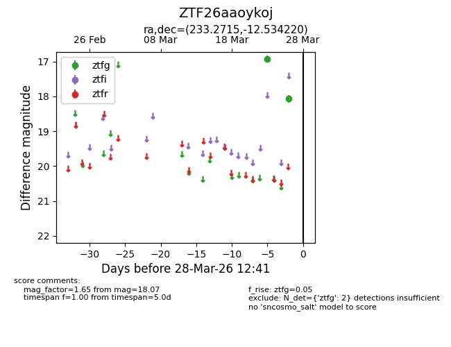
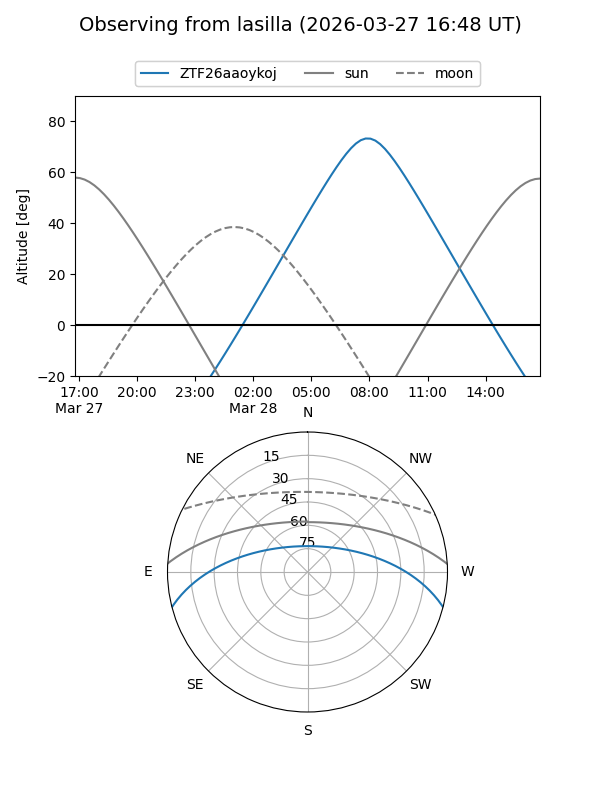
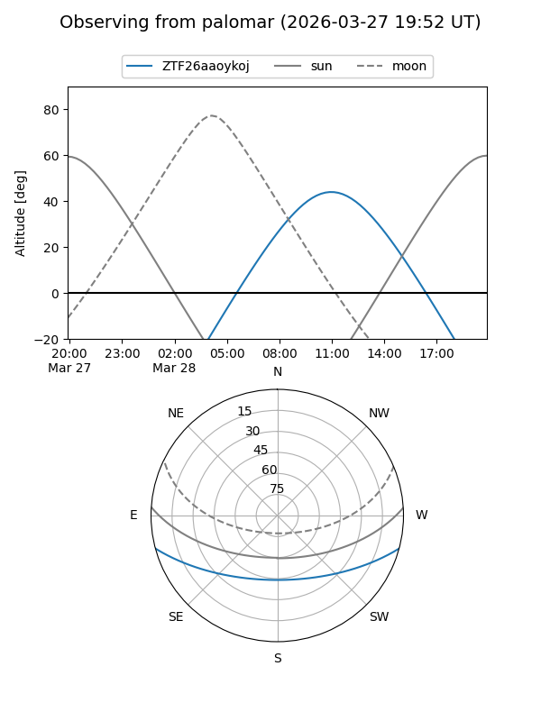

ZTF26aaoykoj
Target ZTF26aaoykoj at 2026-03-28 12:46
Aliases and brokers:
FINK: link
Lasair: link
ALeRCE: link
alt names
ZTF26aaoykoj (ztf,fink_ztf)
Coordinates:
equatorial (ra, dec) = 233.2715,-12.53422
equatorial (HMS+DMS) = 15:33:05.15,-12:32:03.19
galactic (l, b) = (352.8760,+34.23095)
Flags:
Photometry:
last ztfg=18.07
2 ztfg detections
Lightcurve

Visibility


Additional plots